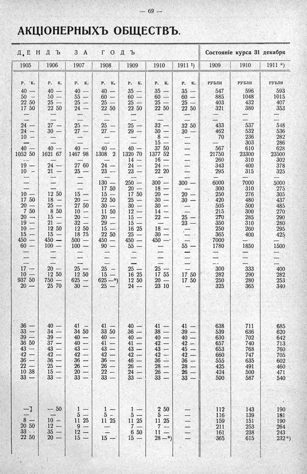

Лист источника 115
Скан

Распознанный текст
69
АКЦІОНЕРНЫХЪ ОБЩЕСТВЪ.
ДЕНДЪ ЗА ГОДЪ Состояніе курса 31 декабря
1905 1906 1907 1908 1909 1910 1911 ¹) 1909 1910 1911 *)
Р. К. Р. К. Р. К. Р. К. Р. К. Р. К. Р. К. РУБЛИ РУБЛИ РУБЛИ
40 — 40 — 40 — 40 — 35 — 35 — 35 — 547 596 593
50 — 50 — 55 — 60 — 60 — 60 — 60 — 885 1048 1015
22 50 25 — 25 — 25 — 25 — 25 — 25 — 403 432 407
17 50 22 50 24 — 22 50 22 50 22 50 22 50 321 380 353
— — — — — — — — — —
24 — 27 — 25 — 25 — 25 — 32 — 32 50 433 537 548
24 — 30 — 27 — 27 — 29 — 30 — 30 — 462 532 536
10 — — — — 8 — — 70 236 282
— — — — — 15 — — — 303 286
40 — 40 — 40 — 40 — 40 — 37 50 — 567 610 628
1052 50 1621 67 1467 98 1308 2 1320 70 1377 52 — 21750 23300 23500
— — — — 14 — 16 — — 260 310 302
19 — 24 — 27 60 24 — 24 — 24 — — 343 400 378
10 — 21 — 25 — 23 — 23 — 22 20 — 295 315 325
— — — — — — — — — —
— — — 130 — 250 — 300 — 300 — 6000 7000 5000
— — — 17 50 20 — 18 — — 300 310 275
10 — 12 50 15 — 15 — 17 50 20 — 20 — 250 276 305
17 50 18 — 20 — 22 50 25 — 30 — 30 — 420 480 437
20 — 25 — 27 50 30 — 30 — 30 — — 505 500 485
7 50 8 50 10 — 11 50 12 — 14 — — 215 300 270
20 — 15 — 20 — 20 — 15 — 22 — 25 — 270 285 290
19 — 21 — 32 — 29 — 15 — — 23 — 350 310 280
10 — 12 50 12 50 15 — 16 25 18 — — 250 260 295
15 — 15 — 18 75 22 50 25 — 30 — — 365 400 425
450 — 450 — 500 — 450 — 450 — 450 — — 7000 — —
60 — 100 — 100 — 90 — 55 — — 55 — 1780 1850 1500
— — — — — — — — — —
— — — — — — — — — —
— — — — — — — — — —
17 — 20 — 25 — 25 — 25 — 25 — — 300 333 400
10 — 12 50 12 50 15 — 16 25 17 55 17 50 282 290 282
937 50 750 — 625 — 625 —*) 12 50 20 — 17 50 250 280 253
20 — 25 70 30 — 25 — 24 — 23 10 — 325 365 340
36 — 40 — 41 — 41 — 40 — 41 — 41 — 638 711 685
33 — 34 — 34 50 33 50 36 — 38 — 39 — 539 636 620
39 — 39 — 40 — 40 — 40 — 40 — 40 — 630 702 642
36 50 37 — 40 — 41 — 41 — 42 — 42 — 657 740 713
43 — 43 — 43 — 43 — 43 — 43 — 45 — 653 768 760
42 — 42 — 42 — 42 — 42 — 42 — 42 — 660 747 705
36 — 36 — 36 — 36 — 46 — 36 — 36 — 555 635 602
22 — 25 — 26 — 26 — 26 — 28 — 28 — 425 491 460
10 38 15 — 20 — 22 — 24 — 26 — 26 — 424 500 471
33 — 33 — 33 — 33 — 33 — 33 — 33 — 500 587 540
—] — 50 1 — 1 — 1 — 2 50 — 112 143 190
— — 5 — 5 — 5 — 5 — — 116 139 181
8 — 10 — 11 25 11 25 11 25 11 25 — 159 151 190
20 50 12 — 9 — — 7 — 7 — — 211 253 264
33 — 35 — 12 — — 6 50 11 — — 161 238 243
22 50 20 — 15 — 15 — 15 — 28 —*) — 365 615 232*)